| 图示 | 名称 | 数量 | 说明 |
| 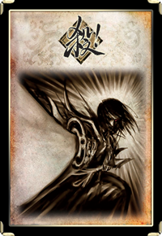 | 杀 | 30 | 出牌阶段，攻击范围内对除自己以外的一名角色使用，效果是对该角色造成1点伤害。 游戏开始时攻击范围是1。 在游戏开始前的设置里你可以选择每回合能用几张杀【杀】。 |
| 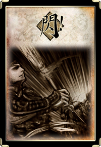 | 闪 | 15 | 当受到【杀】的攻击时，可以使用一张【闪】来抵消【杀】的效果。 闪通常情况下只能在回合外使用或打出。 |
| 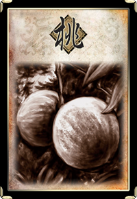 | 桃 | 8 | 桃能在两种情况下使用：
1、在你的出牌阶段，你可以使用它来回复你的1点体力。 2、当有角色处于濒死状态时，你可以对该角色使用【桃】，防止该角色的死亡。 ★例如，一名角色的剩余体力为2点，此时受到【闪电】造成的3点伤害，此时该角色处于濒死状态，该角色或其他任何人合计需使用2张【桃】才能救回（2-3+2=1）。 ★出牌阶段，若你没有损失体力，你不可以对自己使用【桃】。 |
| 图示 | 名称 | 数量 | 说明 |
| 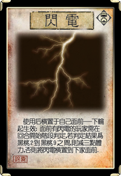 | 闪电 （延时类锦囊） | 2 | 出牌阶段，对你使用，将【闪电】横置于你的判定区里。【闪电】于你的下个判定阶段开始结算，其效果是：目标角色进行一次判定，若判定结果为黑桃2～9的牌，则【闪电】对该角色造成3点伤害，弃置【闪电】。若判定结果不在此范围，将【闪电】移动至下家的判定区里。
★【闪电】的目标可能会不断的进行改变，直到它生效。若它被抵消，则将它直接移动到下家的判定区里（而不是判定后再移动）。 ★【闪电】造成的伤害没有来源。 |
| 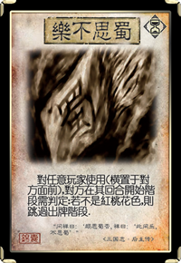 | 乐不思蜀 （延时类锦囊） | 3 | 出牌阶段，对除你外，任意一名角色使用，将【乐不思蜀】横置于该角色的判定区里。【乐不思蜀】于该角色的判定阶段开始结算，其效果是：该角色进行一次判定，除非判定结果为红桃，否则跳过其出牌阶段。
★若判定结果为红桃则没有事发生。 ★【乐不思蜀】在结算后都将被弃置。 |
| 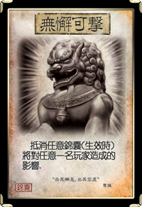 | 无懈可击 | 4 | 在目标锦囊生效前，抵消其对一名角色产生的效果。 ★【无懈可击】是一张可以在其他锦囊开始结算时使用的锦囊，它只能抵消目标锦囊对一名指定角色产生的效果。 ★【无懈可击】本身也是锦囊，所以也可以被抵消 ★特别的，当【无懈可击】抵消【闪电】的效果后，【闪电】不会被弃置，而是继续传递给下家（见【闪电】段落）。 |
| 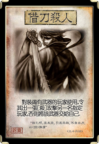 | 借刀杀人 | 2 | 出牌阶段，对除你外，装备区里有武器牌的一名角色A使用，A需对你指定的一名角色B使用一张【杀】，否则你获得A装备区里的武器。
★A使用【杀】时，角色技能和武器技能可以照常发动 |
| 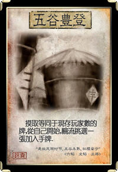 | 五谷丰登 | 2 | 出牌阶段，对所有角色使用。你从牌堆亮出等同于现存角色数量的牌，然后按行动顺序结算～目标角色选择并获得其中的一张。
★这张牌会让包括你在内的角色每人各从一定数量的牌里挑选一张加入手牌。 |
| 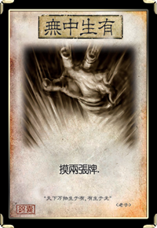 | 无中生有 | 4 | 出牌阶段，对你自己使用，摸两张牌。 |
| 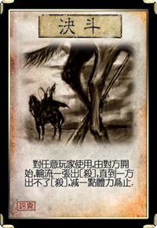 | 决斗 | 3 | 出牌阶段，对除你外任意一名角色使用。由目标角色先开始，你和他/她轮流打出一张【杀】。【决斗】对首先不出【杀】的一方造成1点伤害，而另一方视为此伤害的来源。
★使用【决斗】有可能让自己受伤，关于来源的解释请参看基本概念章节的“伤害和来源”段落。 |
| 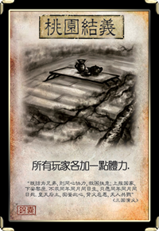 | 桃园结义 | 1 | 出牌阶段，对所有角色使用。按行动顺序结算，目标角色回复1点体力。
★这张牌会让包括你在内的角色各回复1点体力。 |
| 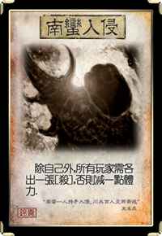 | 南蛮入侵 | 3 | 出牌阶段，对除你以外的所有角色使用。按行动顺序结算～除非目标角色打出一张【杀】，否则该角色受到【南蛮入侵】对其造成的1点伤害。
★你必须指定除你外的所有角色为目标，然后他们依次（从你的下家开始）选择是否打出【杀】。 |
| 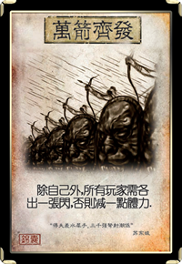 | 万箭齐发 | 1 | 出牌阶段，对除你以外的所有角色使用。按行动顺序结算～除非目标角色打出一张【闪】，否则该角色受到【万箭齐发】对其造成的1点伤害。
★你必须指定除你外的所有角色为目标，然后他们（从你的下家开始）依次选择是否打出【闪】。 |
| 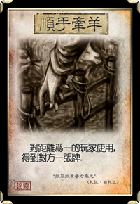 | 顺手牵羊 | 5 | 出牌阶段，对除你以外，与你距离1以内的一名角色使用。你选择并获得该角色的手牌（随机选择）、装备区或判定区里的一张牌。
★使用顺手牵羊时，注意你装备区里的马和目标角色装备区里的马。 |
| 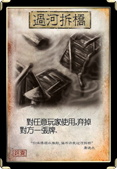 | 过河拆桥 | 6 | 出牌阶段，对除你外任意一名角色使用。你选择该角色的手牌（随机选择一张）、装备区或判定区里的一张牌，该角色弃置这张牌。
★尽管目标角色判定区里的牌不属于他/她，你依然可以令他/她弃置那张牌。 |
| 图示 | 名称 | 数量 | 说明 |
| 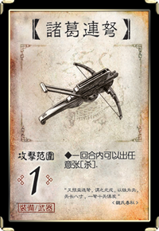 | 诸葛连弩 | 1 | 类型：武器 攻击范围：1 作用：出牌阶段，你可以使用任意张【杀】 |
| 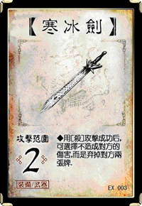 | 寒冰剑（EX牌） | 1 | 类型：武器 攻击范围：2 作用：当你使用【杀】造成伤害时，你可以防止此伤害，改为弃置该目标角色的两张牌。 ★弃对方两张牌时,可以是手牌也可以是已装备的牌。（相当于两张【过河拆桥】的效果）。 ★弃完第一张，再弃第二张。 ★不得弃掉对方判定区里的牌。 |
| 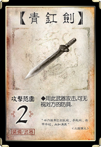 | 青釭剑 | 1 | 类型：武器 攻击范围：2 作用：锁定技，每当你使用【杀】攻击一名角色时，无视该角色的防具。 ★对方的防具没有任何效果。 |
| 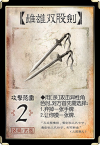 | 雌雄双股剑 | 1 | 类型：武器 攻击范围：2 作用：你使用【杀】，指定了一名异性角色为目标后，在【杀】结算前，你可以令对方选择一项：自己弃一张手牌或者让你从牌堆摸一张牌。 |
| 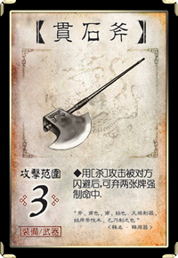 | 贯石斧 | 1 | 类型：武器 攻击范围：3 作用：目标角色使用【闪】抵消你使用【杀】的效果时，你可以弃两张牌，则【杀】依然造成伤害。 |
| 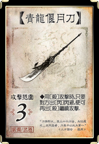 | 青龙偃月刀 | 1 | 类型：武器 攻击范围：3 作用：当你使用的【杀】被【闪】抵消时，你可以立即对相同的目标再使用一张【杀】，直到【杀】生效或你不愿意出了为止。 |
| 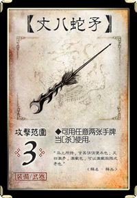 | 丈八蛇矛 | 1 | 类型：武器 攻击范围：3 作用：当你需要使用（或打出）一张【杀】时，你可以将两张手牌当一张【杀】使用（或打出）。 |
| 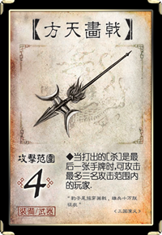 | 方天画戟 | 1 | 类型：武器 攻击范围：4 作用：当你使用的【杀】是你的最后一张手牌时，你可以为这张【杀】指定至多三名目标角色，然后按行动顺序结算之。 |
| 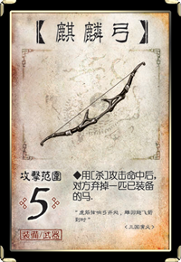 | 麒麟弓 | 1 | 类型：武器 攻击范围：5 作用：你使用【杀】对目标角色造成伤害时，你可以将其装备区里的一匹马弃置。 |
| 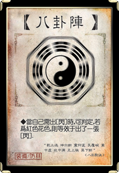 | 八卦阵 | 1 | 类型：防具 作用：每当你需要使用（或打出）一张【闪】时，你可以进行一次判定：若结果为红色，则视为你使用（或打出）了一张【闪】；若为黑色，则你仍可以从手牌里使用（或打出）。 ★由八卦使用或打出的闪，并非从你的手牌中使用或打出。 |
| 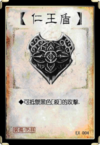 | 仁王盾（EX牌） | 1 | 类型：防具 作用：锁定技，黑色的【杀】对你无效。 ★【决斗】过程中【仁王盾】无效。 |
| 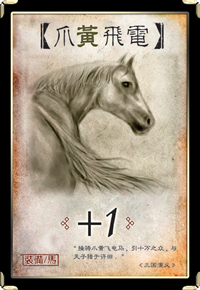 | 爪黄飞电（+1马） | 1 | 《三国演义》：“曹操骑爪黄飞电马，引十万之众，与天子猎于许田。” |
| 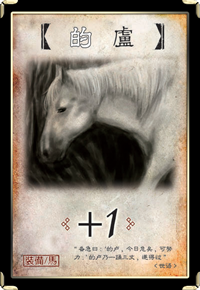 | 的卢（+1马） | 1 | 《三国志 蜀志 先主备传》：“所乘马名的卢，骑的卢走，堕襄阳城西檀溪水中，溺不得出。备急曰：‘的卢，今日危矣，可努力。’的卢乃一踊三丈，遂得过。” |
| 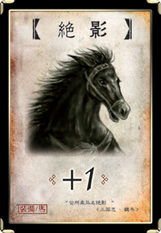 | 绝影（+1马） | 1 | 《三国志 魏书》：“公所乘马名绝影，为流矢所中，伤颊及足，并中公右臂。世语曰：昂不能骑，进马于公，公故免，而昂遇害。” |
| 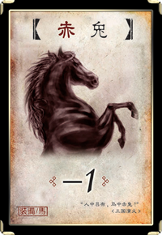 | 赤兔（-1马） | 1 | 《三国志 魏志 吕布传》：“布有良马名曰赤兔。” |
| 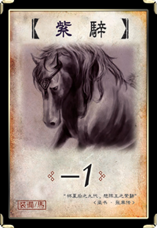 | 紫骍（-1马） | 1 | 《魏志》陈思王表文帝曰：“臣于武皇帝世得大宛紫骍马一匹，教令习拜。” |
| 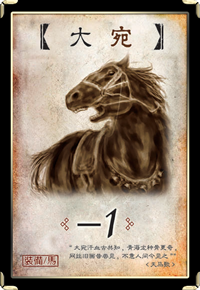 | 大宛（-1马） | 1 | 宋司马光《天马歌》：“大宛汗血古共知，青海龙种骨更奇，网丝旧画昔尝见，不意人间今见之。” |